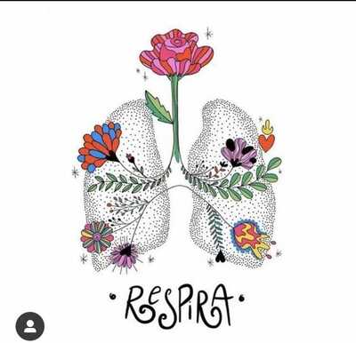
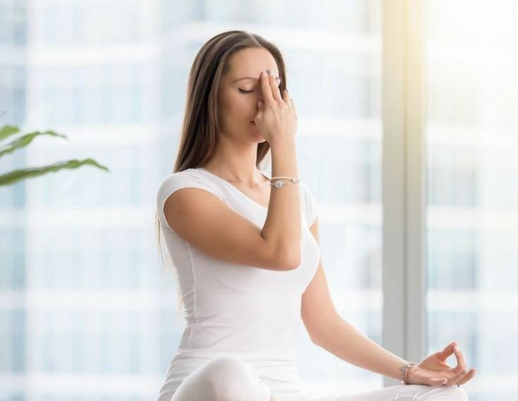

La respiracion conciente
La respiración consciente se basa en la afirmación de que la
respiración es un proceso vital que no solo proporciona oxígeno al
cuerpo, sino que también tiene un impacto en nuestra mente,
emociones y energía. Se considera una herramienta poderosa para
equilibrar y armonizar todo el ser.
En la práctica de la respiración, se presta especial atención a la
respiración consciente y se utiliza de manera intencional para
influir en diferentes aspectos de nuestro ser. Esto implica dirigir
conscientemente la respiración hacia diferentes áreas del cuerpo y
utilizar técnicas de pranayama para regular el flujo de energía
vital (prana) en el organismo.
La respiración consciente y la utilización diaria de diferentes
pranayamas se considera una práctica que puede mejorar la salud
física, calmar la mente, reducir el estrés y aumentar la vitalidad.
Al trabajar con la respiración de manera consciente y enfocada, se
busca lograr una integración completa del cuerpo, la mente y el
espíritu, promoviendo un estado de bienestar general.

Pranayama Nadi Shodhana
También se le llama "respiración de las fosas nasales alternadas" o
"respiración purificadora de los canales energéticos". Nadi
significa "canal" y Shodhana significa "purificación" en sánscrito.
En la práctica de Nadi Shodhana, se utiliza el dedo para cerrar
alternativamente una fosa nasal mientras se inhala y exhala a través
de la otra fosa nasal. Esto equilibra los hemisferios derecho e
izquierdo del cerebro y armoniza los canales energéticos, conocidos
como nadis, en el cuerpo.

¿Cómo la realizo?
-
Siéntate en una posición cómoda, preferiblemente en una postura de
meditación con la columna recta y los hombros relajados.
-
Utiliza el pulgar de la mano derecha para cerrar la fosa nasal
derecha y el dedo anular o meñique de la mano derecha para cerrar
la fosa nasal izquierda.
-
Inhala suavemente a través de la fosa nasal izquierda mientras
mantienes cerrada la fosa nasal derecha.
-
Alcanza el punto de retención breve después de la inhalación y
luego cierra la fosa nasal izquierda con el dedo anular o meñique
de la mano derecha, liberando al mismo tiempo la fosa nasal
derecha.
-
Exhala suavemente a través de la fosa nasal derecha.
-
Inhala por la fosa nasal derecha.
- Exhala por izquierda…..
-
Continúa alternando las fosas nasales mientras inhalas y exhalas.
Se recomienda practicar Nadi Shodhana durante algunos minutos cada
día para obtener los beneficios de equilibrio y armonización. Esta
técnica de pranayama puede ayudar a calmar la mente, reducir el
estrés, aumentar la concentración y mejorar la claridad mental.